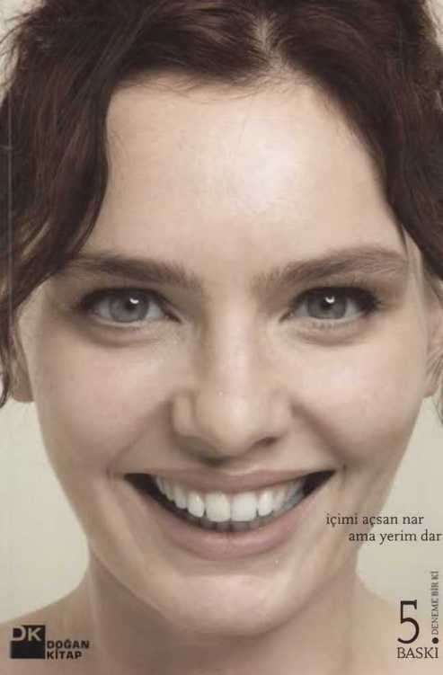

NİL’İN KELEBEKLERİ
içimi açsan nar, ama yerim dar
Nil Karaibrahimgil
Nil’in Kelebekleri
Yazan: Nil Karaibrahimgil
Yayın hakları: © Doğan Egmont Yayıncılık ve Yapımcılık Tic.A.Ş.
Bu eserin bütün hakları saklıdır.Yayınevinden yazılı İzin alınmadan kısmen veya tamamen alıntı yapılamaz, hiçbir şekilde kopya edilemez, çoğaltılamaz ve yayımlanamaz.
I.baskı / Şubat 2011
5. baskı / Kasım 2012/ ISBN 978-605-1 I 1-982-3 Sertifika No: 11940
Kapak tasarımı: Uğurcan Ataoğlu Grafik tasarım: Fatma Yollar Kapak fotoğrafı: Serdar Tanyeli Baskı: Ayhan Matbaa Basım Sanayi veTic. Ltd. Şti.
Mahmutbey Mah. Deve Kaldırım Cad. Gelincik Sok.
No: 6 Kat 3-4 / Bağcılar -İSTANBUL Tel. (212) 445 32 38 Sertifika no: 22728
Doğan Egmont Yayıncılık ve Yapımcılık Tic. A.Ş.
19 Mayıs Cad. Golden Plaza No. I Kat 10, 34360 Şişli - İSTANBUL Tel. (212) 373 77 00 / Faks (212) 355 83 16
www.dogankitapxom.tr / editor@dogankitap.com.tr / satis@dogankitap.com.tr
îçses
Bana sorarsanız hayat sadece ‘an’lardan ibaret. Bu ‘an’lar belirip, kendilerini çabucak ‘anı’ yapıyor.
Biz sadece onlara şahit olabiliriz. Onlar da bize.
“Her pazartesi Kelebek ekinde köşe yazar mısın?” dediklerinde, “Tamam, o hafta etkilendiğim herhangi bir şeyi yazabilirim” dedim. Beni etkileyenin, başka birilerini de etkileyeceğini varsaydım. Ve başladım toplamaya. Bu toplanmaz denilen şeylerden de topladım. Beni etkilediyse, hoş gelmiştir diye.
Bu kitap, hayatımın bu anlarına toplu bir teşekkür.
içinde ve kapağında bir anlık gülüşler, bir anlık manzaralar, bir anlık ‘hah işte buî’lar, bir anlık baharlar, baharatlar var. Kafiyeler var.
Köşe yazılarının ömrü “bir günlük’, en güzel gülüşün, buluşun, duruşun bir günlük diyenlere en güzel cevabı yine kelebeklere bakarak bulabiliriz:
Kelebekler kelebek olmadan önce, tırtıl olarak yaşıyorlar. Kanatlarını açıp en rengârenk oldukları kısa sürede de, sadece çoğalmak istiyorlar. Yani bizim, ‘A kelebek!’ diyerek el çırptığımız dönemlerinde, gerekirse yemek bile yemeyip yavrulamayı düşünüyorlar. En güzel hallerini, kendilerini ebedi kılma çabasıyla geçiriyorlar.
Benimki de bir anlık gülüşle, şarkıyla ya da yazıyla çoğalma çabası. Gözlerinizi şu yazdıklarımın üzerinde gezdirip, bana şahit olduğunuz her an beni çoğaltıyorsunuz. Beni mahcup
ediyorsunuz. Lafı bir türlü size teşekkür etmeye getiremiyor-sam, hep bu mahcubiyetimden. Size teşekkürüm çok içten.
Okurlarım dışında hayatımın içinde yer alan ve bu kitabı hayalimden gerçeğe taşıyan biricik insanlar da var. Hayatın güzel anlarım bana hediye eden ve paylaşan annem Berin, babam Suavi, kardeşim Onur ve canım Serdar var. Yazılarımı kitap olmaya değer bulan Doğan Kitap ve editörüm Handan var. Kitabın kapağını bana rağmen benim için yapan Uğur-can ve Fatma var. Kapak fotoğrafımı çeken tatlı insan Serdar Tanyeli var. “Bu kitabın bir de internet sitesi olmasın mı?” diyen Muzaffer ve Igoa ekibi var. Onlara da teşekkürüm çok derinden.
Bu arada internet demişken, www.nilinkelebekleri.com’a girerseniz, Hindistan’da en güzel renklerle boyanmış ağaçlar bulacaksınız. Bu ağaçların her biri, bu kitaptaki bir yazıyı temsil ediyor. Ağaçlardan birini tıklar, yorum yazarsanız, ağaç biraz büyüyecek. Ne kadar çok yorum, o kadar büyük ağaç! Her ağacın bir büyüme hedefi var, o hedefe ulaştığında, ben gidip o ağaç için gerçek bir fidanlıkta gerçek bir ağaç dikeceğim. Çok ağaç dediğimin farkındayım ama bu sayede, bu kitabın kâğıdına olan borcumu ödemiş olacağım.
Üç dilekle bitirmek istiyorum. Dilerim bu kitap sayesinde yazılarım yeni okurlarla buluşur. Dilerim eski okurlar, yazılan bir arada bulunca sevinir. Dilerim bu kitap okuyana güzel ‘an’lar bırakır.
Sevgi.
Nil
Kim bu içimdeki fısıltı?
Kim bu içimdeki fısıltı, beni sadece sesiyle sarıp sarmalayan? Savaşlara ve barışlara yollayan... Saçların güzel merak etme diyen... Geceleri sorularla uyutup, sabahlan cevaplarla uyandıran. Seviyorum onu. Onsuz bir iç diyalogum, bir iç annem olmazdı. Hiç olurdum. Matruşka olamazdım onsuz. Ne kadar renkli de olsam, içi boş bir tahta kadar süs olurdum.
Nereye gitsem benimle gelen, o susuk ses kimin? Demin yolda yürürken, bana su içen kuşu gösterdi, sonra inciler takmış o yaşlı kadım, sonra o bankta uyuyakalmak üzere kafasının ağırlığını hafifçe omzuna düşüren kızı... Aslında çoğu şeyi bana o gösterdi diyebilirim. İçimde kocaman resmini çizip, gözüme soktu bazen bazı şeyleri. Sırf anlayabileyim diye... O da benimle sınırlı naapsm? O benim ta kendim değilse tabii.
O fısıltı benim gerçek sesim aslında. Size duyurduğum sesime pek benzemediğini söyleyebilirim. Daha yumuşak, daha şakacı bir ses. Ses demek bile sesini fazla açmak olurdu, bir sesin sureti gibi daha ziyade. Başka yerlerden gelen bir haber gibi... Bilemem, belki de hayatın göbeğiyle kırmızı hattı olan biri, iyi biri. Benden iyi. Beni iyi yapıyor, bana iyi geliyor, iyilikler yaptırıyor bana. Öfkelendiğimde onun sesini duymamak için çok bağırmam gerek. Belki de herkesin öfkelenince bağırması bundandır. ‘Saçmalıyorsun’ der çünkü öyle zamanlarda. ‘Nefes al ver’ der.
Belki de o ses, benim ruhumdur. Belki de ruh, o. Beyinden gelse hissederdim, ses yukardan gelmiyor eminim. Karın
taraflarından geliyor bu ses. Ve içimde ışıklı bir tüye binip, seyahat ediyor. Her yerimi bilir. Derin nefeslerle büyüyen ciğerlerimi, korkularla şimşeklenen beynimin arka sokaklarını, isteyince çıtlattığım ayak başparmağımın gürültüsünü. Benim hakkımda en çok bilgiye, o sahip.
Kim o fısıltı, benim hiç tanışmadığım bir sürü insanı tanıyıp, selam veren? Nereden tanıdığını hiç bilmiyorum ama gariptir, o insanları ben de tanımış gibiyim önceden. Yani o ve ben aynı şey değilsek tabii... Bir keresinde bunu sormuştum ve cevap olarak, bazı insanlarla göz göze gelmemizin tesadüf olmadığım söylemişti.
Ne derse hakkı var. Ki bunu dememe çok kızar. Bu kelimeden hiç haz etmiyor. Savaşlar bundan çıkarmış. Ama gerçekten, içime taşınmış bir aile gibi o fısıltı. Fısır, fısır ve fısır. Çoluk çocuk içimde yaşıyorlar, çamaşır asıyorlar sanki saçlarıma. Sanki ellerim, sanki gözlerim onların balkonu... Öyle ısıtıyorlar işte beni.
Mesela ben, önüne bakarak yürüyenlerden oldum her zaman. Sanki kaldırımlarda yazan bir hikâye, beni peşinden sürüklüyor. Altını çiziyorum bazı cümlelerin, kaim kalemlerle... Öyle zamanlarda, tatlı bir sevgili gibi yüzümü çenemin altından hafifçe tutup, gülerek yukarı kaldıran hep o. Onun sayesinde gördüm ben, gökyüzünde yazılı olanı...
Bence o fısıltı gibi şey, doğuştan. Melekten bir dost, bir tür yol gösterici belki. Çünkü hiçbir insan, bu dünyaya iç pusulasız gelmedi. Herkes bildi kuzeyi neresi, nerede ekvator? Nereler soğuk buz gibi kutup, nerelerde siesta? Bu fısıltı olmasa, bu seyahatler de olmazdı aslında. Düşünsenize, hepimize ‘hadi kalk git’ diyen o değil miydi?
Bazı sabahlar, diğerlerinden daha güzel değil mi? Mesela bu sabah... İçimde sekiyor, oyunlar oynuyor, gıdıklıyor beni... Dur yapma diyorum.
İşte böyle yazılar yazdırıyor bana...
Bir kadının saçını yaşama hakkı
Yokuş aşağı yürürken, saçlarım rüzgâra bırakırsın bazen... Ve sanki kanatların varmış gibi olur. Rüzgâr uçurur, sen içindeki uçan balonların ipini bırakırsın.
Bir denizden çıkarsın, bir sıcak yere yatarsın. Onun üzerine başını koyarsın. Nemlidir daha. Ama sen kitabın ortasına gelene kadar kuruyacak, kıvrılacak. Tuzlu kalıcak. Bir yaz boyu, deniz, güneş, kum ve yağ kokucak. Rengi açılacak. Tenine uyacak, şımarmaksın kendine.
Bir akşamüstü ışığında, kafanı toparlamak için sırf, saçlarını tutup havaya kaldırıp, bir uyduruk düğüm atıp kahveni yudumlayacaksın. Bir erkeğin aklında ‘o güzel topuzlu kız’ olarak kalmaksın. O senin aklında kalmıycak. Bir şeye il-hamsındır sadece. Ve bu sana yeter...
Reklamlardaki gibi yürürsün bir kaldırımdan. Savurarak saçlarını. Güzelce yıkayıp, güzelce tarayıp, güzelce bıraktığın saçlarını... Senin güzelliğini başına taç yapan o tellere, kim bilir kimler takılır düşer. Umursamadan yürür gidersin. Zamamn içinden geçtiğin gibi. Saçların olduğu için böylesin...
Yüzüne düşen perçemleri, bir sokağın köşesinde, kulağının arkasına iter bir erkek. Aşk maşasıyla tutulup, ateşe atılmış gibi hissedersin. Rüzgâr yine bozsa dersin, o yine yapsa...
Halini anlatmasını istersin ondan. Dile gelir. İçin topluyken örülür, için zıplarken, at kuyruğu olur. Karar vermişsen, fönlü durur. Yağmur yağarsa, nem olur, kıvrılır uyur omuzlarında. Hayatı değiştirmek istediğinde, değiştirebileceğin tek şey odur çoğu zaman. Gider renk değiştirirsin. Kestirirsin kısacık. Cesur olursun.
Yüzünü çerçeveler. Dünyaya asar.
Bir şeyden rahatsız olduğunda, yapacak bir şey yoksa, seninle oynar. Kıvırırsın, omzunun arkasına atarsın. Toka takar, çıkarırsın. Seni saklar, saklanmak istediğinde. Oyalar elini, oyalanmak istediğinde.
Uzar. Uzar da uzar. Daha güzel olsun diye, yağlar, ballar sürer, bepanten iğneleri kırarsın. Çok güzel olursa, kalp bile kırarsın... Tabii bunu tercih etmezsin... Biri onlara şiir yazsa, hayır demezsin.
Yolda yürürken, burnuna kokusu gelir. Senin ormanın onlar. O mis koku, ciğerini açar, kalbini açar, adımlarını hızlandırır...
En tropik halinde, sıcak bir yaz günü, o saçım arkaya atan erkek vardı ya o, ya da ona benzer biri, bir çiçek asar ona. Süs takar. Gözün yere bakar.
Benim için cennet budur. Diğer cennetlere saygım sonsuzdur.
Kendimde olmayanı istemezsem, otomatikman mutlu mu olurum?
Kırmızı ojeli ellerimle, g’leri j’leri, y’leri fleri fırfırlayarak yazıyorum, insan tuhaflıkları araştırmalarım devam ediyor. Yine son derece bilimsel, kötümser ve komikserim. Bunlar birbirini dengeleyen şeylerdir. Nerede kalmıştık... Hah, insan, sonucunu bilmediği maçı, ertesi gün seyretmek istemezmiş, istemiyoruz çünkü, hayata girişle çıkış arası, olaylar üzerinde kontrol sahibi olmak istiyoruz. Kundaktayken bile, çevirdiğimiz şey ters dönerse, ses çıkarırsa gülücükler saçıyoruz. Maç oynanırken, takıma yolladığımız hurra enerjisi televizyondan kabloya, kablodan stada, staddan topa, toptan ağlara gidiyor diye düşünüyoruz. Maç çoktan oynanıp bittiyse, “ben izlemem kardeşim! Üzerinde etkimin olmadığı, bana tepkimeyen şeyi napayım ben’ diyoruz. Bu yüzden kumarda, zan kendi atanlar, kazamcaklanna daha çok inanırmış. Diyeceksiniz ki, e yani naapalım bu böyleyse... Öyle demeyin ama hemen, bu huyumuz bize pahalıya patlıyor. Kontrolü elden bırakmayan biz, geleceğimizi de hayal gücümüzle kontrol etmeye çalışıyoruz. Hayat oynanırken, yolladığımız hurra enerjisi damarlara, damarlardan beyine, beyinde küçücük bir alana, o alandan yan-na bağlanır sanıyoruz. Halbuki gerçek yann, hiç bugünkü ya-nn gibi değil! Gördüğünüz gibi, bunu anlatmak bile mümkün değil.
Peki, söyleyin: Kafası birleşik doğan ikizler hakkında-ki fikriniz nedir? (Kendinize 5 saniye tanıyın, ilk geleni yakalayın sıkıca tutun, dürüstçe içinize fısıldayın.) Onlar için
üzülüyorsunuz. Sizden daha kötü bir dürümdalar. Dolayısıyla kesinlikle eminsiniz ki, sizden katmerlerce daha mut-suz-lar. Siz öyle sanın. 6. saniyeyle birlikte, beyninize yeni bir şey sokmaya hazırlanın. Onlar hallerinden gayet memnunlar! Birbirleriyle çok mutlular. Lori ve Reba Schappel ikizleri, onları birbirlerinden ayıracak olan ameliyata kesinlikle hayır diyor. Onlar gibi yüzlercesi var. Neşeli, oyunbaz ve iyimserler. Reba, biraz utangaç, ödüller kazanan bir country albüm doldurmuş. Lori daha sosyal, çilekli pastayı çok seviyor ve bir hastanede çalışıyor. İleride evlenip, çocuk yapmak istiyor. İkisi de son derece mutlu olduklarını söylüyor. Ben söylemiyorum, dikkatinizi çekeyim. Okuduğumu işime geldiği gibi, kendi dilimle aktarıyorum. Aktarmamın sebebi, mutluluğun matematiksel bir ölçümü olmasının, imkânsızlığını göstermek. Ve sırayla şu soruları sordurtmak: Onlar, benim kadar mutlu olabilirler mi? Eğer öyleyse başkaları mutluyum dediğinde, aynı mutluluktan mı bahsediyoruz? Bunlarla kafamı karıştırma daha fazla diyorsanız, sadede geleyim. Tıpkı Lori ve Reba’nm birbirlerinden ayrıldıkları gün, ‘eskiden mutsuzduk’ diye yanılmaları gibi, biz de her gün geçmişi ve en önemlisi geleceği yanlış tartıyoruz. Bugünden yarına bakıp, bugünkü hislerle bir gelecek kuruyoruz. Geleceği bugün gibi bir şey sanıyoruz. Tahminoskop, yarın nasıl olucak sorusunun cevabını göremiyor. Çünkü orası kör noktadır.
Gözümüz etrafa, hayal gücümüz zamana bakıyor. Fakat o kadar hayalsiz, o kadar güçsüz ki, içiniz rahat olsun, insan, yarını bugünün biraz değişiği zannediyor. Hangimizin bugünü, geçmişinin biraz değişiği? Hiçbirimizin. Hepimizinki yeni. Fakat orası kör nokta dediğim gibi. Plan yapan, kendine komplo kurar yani anlayacağınız. Çünkü yarınla bugün, Ulan Baturla Tokyo kadar benziyor ancak.
Buyrun sizin her günkü falınız:
Üç vakte kadar, sürprizler içindesiniz.
Küçük şeylerin keşfedicisi
iyimser ve meraklı günlerimden birinde Hawaii şaman-lannm 7 cümlesini okudum. Bir kutuda çıkageldiler yılbaşı hediyesi olarak. Hayatla ilgili basit dolambaçsız cümlelerdi bunlar. Hepsini önceden duymuştum, şaşırtıcı değillerdi.
Sadece düğüm çözücü, sadeleştirici, düşündürücüydüler.
işte size 7 cümlede, hatta kelimede, hayatın anlamı:
Aloha: (To love is to be happy with) sevmek birlikte mutlu olmaktır.
Yoruma gerek bile yok. O kadar basit ve doğru ki. Demek artık sevmenin ya da âşık olmanın limitini hesaplayıp, türevlerini bulmam, sürekli sağlama yapıp, paranteze almama falan gerek yok. En sonunda hepsinin kareköküne bakıp, bu ne ya? demek de yok. Sonuç yuvarlak bir sayı! 3 hece. Hawaiili filmlerden çiçeklerle boynumuza asılan tanıdık bir kelime: Aloha.
Yanımda duran her neyse, onunla mutluysam onu seviyorum demektir.
Oh be.
Kala: (There are no limits) hiçbir şeyde sınır yoktur.
Bunu en iyi, her şeyin bittiğini düşünürken son adımı atıp kurdeleyi göğüsleyen bilir. Ben ara sıra çakozlar gibi olurum çitlerin kafamda olduğunu, bahçemde olmadığını... hatta
ufuk çizgisinin bile olmadığını. Dünyanın yuvarlaklığından öyle durduğunu. Ne kadar çalışsam, düşünsem, söylesem, öğrensem, koşsam, anlatsam az olduğunu... Bir bunları, bir de yanımdakilerin limitlerimi belirlediğini unutmamam gerek. Çünkü insan çocukça sobelediği duvarların kendi saklambaç oyunu olmadığını anlar bazen. Üstüne bir de mızıkçı ilan edilir ki sormayın!
Mawa: (Now is the moment) sadece ‘şimdiki zaman’ vardır.
Geçmiş ve gelecek iki yanımdan uzayıp giderken ben ancak Süpermen gibi tam tepeye uçarsam yaşamış olurum. Öbür türlü ‘yaşadım’ ya da ‘yaşayacağım’ demem gerekir ‘yaşıyorum’ yerine. Ve eğer tam da şu anda çalarsa bir telefon, cevapsız kalır. Telesekreterse şöyle der: aradığınız kişiye ‘şu an’ ulaşılamıyor! Ben daha tam çözemedim hep burda olmayı. Ben gidip gidip geliyorum ama en azından biliyorum: EN-BÜ-YÜK-ZAA-MAN-ŞÎM-DÎ-KÎ-ZA-MAN!
Mana: (Ali power comes from within) bütün güç içten gelir.
Ben kendimi götürmezsem gitmiş olmam, içimdeki ateş harlı değilse eller bana uzanmaz. Aslında her cümle birinci tekil şahısla başlamalı. Çünkü ‘ben’ yoksam eylem olmaz. Aradığım güç için hep bakakaldığım uzaklar. Ama bu nasıl bir hipermetropluktur Nil Hanım! Karnınızı değil kendinizi içinize çekiniz.
Makia: (Energy flows to where attention goes) dikkat neredeyse enerji oraya gider.
Dikkatli bir bakış her şeyi değiştirmeye başlar. En basitinden biri bana dikkatle baksa yürüyüşüm, gülüşüm değişebilir, daha dik durmaya başlayabilirim. Koşucu olsam sadece önüme bakmam gerekir, okçu olsam sadece 12’ye. Büyüteçle ateş yakmak için elimi sabit tutmam şart yoksa kâğıt alev
almaz. Bunlar güzel de madalyonun öbür yüzü ‘korktuğum başıma geldi’ cümlesi.
Dikkat genellikle farkında olmadan korkulan şeylere kayınca bendeki enerji istemediğim yerde aktive olur.
En olmasım istemediğim yerde enerjimin ne işi var diyenlere: Dikkat dikkat!!!
Pono: (Effectiveness is the measure of truth) gerçek mi değil mi etkisinden belli olur.
Bu çok acayip. Beni en çok düşündüren bu. ‘Gerçek ne?’ sorusuna verilebilecek en acımasız, en objektif cevap. Soğuk, buz gibi bir cevap ama dimdik. Peki etkiyi nasıl anlarım? Uydurmayalım. Etki kendini hemen belli eder. Etkili miydi değil miydi diye bir şey yok ki. Dizini çarptıysan masa gerçek. Saçın uçtuysa rüzgâr gerçek. Kalbini çarptıran, gözünü yaşartan, kahkahayı patlattıran, aaaa diye şaşırttıran, tüylerini diken diken eden o şeylerin hepsi gerçek. Peki ya ben, ben gerçek miyim? Buyur bakalım.
İke: (The world is what you think it is) dünya sana nasıl geliyorsa öyledir.
Aklıma bir reklam slogamm getiriyor. Rolling Stone dergisinin reklamı mıydı tam hatırlamıyorum. Ama lafı şuydu: algılanan gerçektir. Örneğin ben yüzme dersi alırken o havuzun diğer ucu daha uzaktı. Buna yemin edebilirim. Ben daha iyi yüzdükçe kısaldı. Şimdi bir adım! Zor algıladığım her şey zor, kolay algıladığım her şey kolay. Ah benim kontrol etmesi zor duygularım! Dünyamı siz yönetiyormuşsunuz da haberim yokmuş.
Hawaii şamanlanna göre hayatın anlamı işte bu yedi kelimeymiş.
Nil kızımızın bu haftaki naçizane keşfi bu.
Bir kusur ettiysem affola.
Aloha.
Leonardo’nun vinci
Bayanlar baylar, karşınızda anatomist, mimar, botanist, şehir planlamacısı, kostüm ve sahne tasarımcısı, şef, mizahçı, mühendis, at binicisi, kâşif, coğrafyacı, jeolog, matematikçi, filozof, fizikçi, ressam ve müzisyen... Nil Karaibrahimgil!
Değil tabii ama ‘keşke’si var.
İşte bu ‘keşke ben de onun gibi...’ kahramanlarımın peşinde koştuğum günlerden birinde Da Vinci gibi nasıl düşünürüz? kitabını alıp eve kapandım. Kafamdaki soru her zamanki gibi şuydu: Peki benim vince hangi benzini koyarsam ne kadar kaldırabilir? Bir baktım Leonardo’nun benzini çeşit çeşit, hem isimleri Lorenzo’nun yağından bile güzel! İnsan sadece bunları okusa, beynine bir endam gelir:
Curiosita, Dimostrazione, Sensazione, Sfumato, Arte/sci-enza, Corporalita, Connessione.
“Neymiş bunlar neymiş neymiş?” diyenler Curiosita’ya hoş geldiniz. Türkçesi merak, merak, merak. Hayata karşı meraklı bir tutum izlemek, bıkmadan usanmadan en saçma şeyleri bile öğrenmeden duramamak. Leonardo için ‘gelmiş geçmiş en meraklı adam’ demeleri boşuna değil. Bir çiçeği bile çizerken üç değişik açıdan çizmiş. İnsan vücudundan sineğin uçuşuna kadar neye baksa yüzlerce açıdan bakmış. En önemlisi bunlar neyin nesi çok merak etmiş. Belki kuşların neden
iki kanadı olduğunu kendimize hiç sormadan bir ömür geçer. Peki ya ‘Ben en çok ne zaman kendim gibi olurum? Hangi insanın yanında, nerelerde, ne yaparken?’ sorusunu sormadan ömür geçer mi? Gökyüzü neden mavi bilmesek de olur. Peki, Yapmayı en çok sevdiğim şeyden nasıl para kazamnm?’ı bilmesem de olur mu? ‘Archimandrite’nin ne demek olduğunu öğrensem de unuturum. Peki, hayatta en çok istediğim şeyin ne olduğunu öğrensem unutur muyum?
Dimostrazione: Öğrendiğini deneyerek test etme tutkusu, yanlış yapa yapa öğrenme isteği. Leonardo demiş ki: “Deneyim asla hata yapmaz.” Öğrendiğimiz şeyleri yazmaya kalksak bayağı bir şey yazabiliriz. Deneyerek öğrendiklerimizi yazsak o kadar olmaz. Çünkü en büyük korku hata yapma korkusu! Leonardo’nun çizdiği uçaklar hiç uçmamış ama bunun korkusu onu 42 yaşında Latince öğrenmekten alıkoymamış. Bildiğimizden emin olduğumuz, bu doğrudur dediğimiz çoğu şeyi nereden öğrendik? Televizyondan, kitaplardan, internetten, arkadaşlardan, aileden, başkalarından. Yani her cevap bir kıyafet olsa, ben bunu kimden almıştım sorularının içinden çıkamayız. Peki ya ben, ben kendime elime iğneleri batıra batıra ne diktim? İşte bana en yakışan kıyafet o! O halde soralım: Hata yapmaktan korkmasaydım neyi daha değişik yapardım?
Normalspor bir insan ‘bakar ama görmez, dinler ama duymaz, dokunur da hissetmez, yer ama tatmaz, kıpırdar ama hareket etmez, içine çeker de koklamaz, konuşur ama düşünmez’... Sensazione, duyuları fayans parlatır gibi parlatmak demek. Peki nasıl? Kendini güzelliklere götürerek. Leonardo’nun vinci en güzel şekillerin, kokuların, tatların, seslerin ve hislerin benziniyle kaldırır. Bizim vincimiz de. Güzel olan her şey birleşip bizi şekilden şekle sokar.
Ruhumuzun beş hükümdarı var, başka yok. O zaman ıhlamur ağacı kokulu bir rüzgârda, Boğaz’a bakarak ve Norah Jones dinleyerek soralım kendi kendimize: Bugüne kadar gördüğüm en güzel şey ne? Duyduğum en tatlı ses? En içten dokunuş? En lezzetli tat? En güzel koku?
Mis gibi yaşayın diyor yani, misler gibi.
Sfumato:, sfumato da ne demek? Bilmem. Bilmem şart mı ki?.. Sfumato bu işte. Bilinmeyene açık olmak. Şüphe içinde olmaya dayanıklılık. Cevabını bulamadığın şeylerin serinliğini kabul etme. Oradan gitmeme. Sırtına bir şey alıp o ortamda durma. Çünkü yaratıcılık için iyi. Leonardo resimlerinde bize o dumanlı alanları hediye etmiş. O yüzden ifadeleri tam anlayamıyoruz. Hayal gücüne bırakmak için hafif sisli çizmiş çünkü. İfadeyi en net veren göz ve dudak kenarlarını bilerek gölgelere bırakmış. İşte ondan Mona Lisa’nın hangi ruh halinde olduğunu anlamak mümkün değil! Mesela ‘kesin mi?’ benim favori sorularımdan. Bundan vazgeçmek ve bilinmeyenle barışmak gerek bazen. O tolerans sana alan açıyor çünkü. Çelişki taşıyan vinç olalım mı biz? Yaşasın bilinmezlik, yaşasın muallakta kalan şeyler! Yaşasın neşeyle kederin, bağımlılıkla özgürlüğün, güçle zayıflığın, iyiyle kötünün, aynı ile değişiğin, yaşamla ölümün evliliği! Anlayamıyoruz ama besleniyoruz işte. Bir şekilde.
Arte/scienza: Sanat ve bilim arasında dengede durmak. Mantıkla duyguların barış imzaladığı bir yer. Yani sanattaki bilimi, bilimdeki sanatı anlayarak düşünmek. Leonardo hem bilim adamıydı hem de sanatçı. İnsan vücudunu da çizdi, Mona Lisa’yı da. Prof. Roger Sperry yıllar önce Nobel Ödüllü bir araştırmayla beynimizi ikiye bölmüş; sağ taraf hayal kurmuş, sol taraf ayaklarını yere basmıştı. Sonra bunun böyle olmadığı, insan karar verirken duygularıyla
mantığının acayip bir dans yaptığı konuşulur oldu. Yani aslında ‘neuron’un oyununa gelip duruyoruz. Analiz ettiğin şeyin içinde kendini tekrar eden bir güzel ritim vardır ya, belki de demek istediği o. Biz en iyisi aklımızı karıştırıp öyle düşünelim. Belki yeni bir yola çıkarız.
Corporalita: Beynin olduğu kadar vücudun da fit olması. Leonardo, bütün yukarıdakiler yetmezmiş gibi çok da yakışıklıymış. Atletik bir vücudu, dimdik yürüyüşü varmış. Vejetaryenmiş, yaşlanmamak için egzersiz şart demiş, iki elini de kullanarak yazıp çizmiş! Bize de şunları salık vermiş: Neşeli ol, sadece acıktığında ye, az ye, basit doğal yemekler ye, iyi çiğne, her gün egzersiz yap. Hepimizin ilk dilediği hep sağlıkken ve sağlam kafa sağlam vücutta dururken fazla söze ne gerek diyerek...
Connessione’ye geçiyoruz. Her şeyin birbiriyle bağlantılı olduğunu anlamaya. Tokyo’da bir kelebeğin kanat çırpışı New York’taki hava durumunu etkiler mi? Etkiler. Her şeyin her şeyle alakası var da, bunu unutuyoruz. Al işte biri suya taş attı. Halkaları büyüdü büyüdü, derenin karşı kıyısındaki kurbağayı rahatsız etti. Kurbağa sıçradı. Sıçrayınca kertenkele onu fark etti. Yedi. Suya taş atma sesini duyan çocuk kaçtı, annesinin yanına gitti. Gitmeseydi onu da timsah yiyecekti. O taş suyun altında kumu kıpırdattı. Küçük bir bulanıklık yarattı. Evindeki televizyonda bu belgeseli izleyen adam bu görüntüden etkilendi. Kafasının bulanıklığım hatırlayıp psikologu aradı. Psikolog tatildeydi. Taşı atan oydu. Hahaha çok saçma oldu! Ama psikologun belgeselde ne işi var demeyin olur mu? Herkesin her şeyle her zaman işi var. Bir şey keşfetmek için rüzgârın, başakların ve saçların arasındaki gizli anlaşmayı bilmek, en azmdan o bağlantıya açık olmak gerek.
Ne diyelim, düğümümüz bol olsun.
Leonardo’nun vinci onun dehasını kaldırmış. Biz Mona Lisa’yı çizemesek de, bir ağacın yaşının halkalarından anlaşılabileceğini bulmasak da, bunlarla kendi önümüze çıkan taşı kaldırabiliriz. Kaldırmayıp da ne yapacağız ki zaten!
Son olarak bir şey var ki yazmasam olmaz. Leonardo’nun not defterinden yapılması gerekenler:
Bulutların nasıl oluştuğunu ve dağıldığını göster.
Ağaçlardaki yaprakların nasıl çıktığına bak.
Bazı dalgaların neden diğerlerinden daha mavi göründüğünü bul.
Bu kızı yeniden küçültmeliyim
TJyusun da büyüsün ninni tıpış tıpış yürüsün ninni’yi dinleyerek ayağımızın yatağın ucuna tıpış tıpış yaklaştığı yıllarda, kafamızdaki soru işaretleri bambaşkaydı. Cevaplan bizi tanımlamaz, doğru ya da yanlış yapmaz, başka sorulan beraberinde getirmezdi.
Önemli olan sorularla cevaplar değil salıncaklarla doğum günleriydi. Kontrol etmeyi henüz öğrenmediğimiz çene kas-lanmız vardı. Onları erken yatmamak ya da annemizin bir yere gitmemesi için titretip dururduk arada bir.
Paramız yoktu ama o yıllar parayla saadet olmazdı. Müzik zevkimiz bizi kıro falan yapmaz, duyduğumuz herhangi bir şey bizi neşelendirip dans ettirirdi.
Biraz daha büyümek bizi olsa olsa sevindirirdi. Parmaklarla gösterdiğimiz yaşımız bize pek de şeker gelmez, okulun en büyük sınıfına gelmediysek bir anlam taşımazdı.
Beslenme çantamızdan çıkan yemeklerin kalorilerini hesaplamaz, öğretmene bu ekmeğin kepeklisi yok mu diye sormazdık.
Aşkımızı saklamaz, defterimize koca koca yazar, arkadaşlara yayardık. Karşılık bulamazsak bulana dek ısrar eder, sevilmeye değmez biri olduğumuzu düşünüp psikologa gitmezdik.
Büyüdükçe bizi ne yaparsak yapalım seven anne ve babamız sabit kaldı, geri kalan her şey değişti.
Arabamızda giderken dinlediğimiz ‘bu kızı yeniden
büyütmeliyim’ şarkısıyla gözlerimiz hemencecik doluverirdi. Geçmişimizde kırdığımız ve bizi kıran erkekler defterlerden ve kalplerden silinmiş ama sayfada içeri gömülü bir ‘kurşun’ kalem izi kalmıştı.
Defterlerimizin kapağına yapıştırdığımız adı, soyadı, sınıfı artık bizi tammlamaya yetmiyor, bir sayfalık CV gerekiyordu.
Büyümemize rağmen ‘büyüyünce’ kelimesiyle başlayan cümlelerimiz bitmek bilmedi. Bitmedi çünkü küçükken ileride yapmak istediklerimizle şu an yaptıklarımız bir türlü ör-tüşmüyordu.
Biraz daha zaman verilse ‘aferin’i duymamız kaçınılmazdı.
Günler günleri kovalamıştı işte ve biz yetişkinliğe yakalanmıştık. Koca kız olmuştuk. Rahatlamak için yoga ve meditas-yon yapmamn, zayıflamak için biraz ‘light’ yemenin, eğlenmek için bir yerlere gidip bir ‘drink’ almamn vakti gelmişti.
Ve tam Ally Mc Beal, Sarah Jessica Parker ve Madonna birleşip ‘Transformers’ı oluşturmuş üstümüze üstümüze geliyordu ki...
Bahar geldi.
Böyle bir günde insan laptopuyla ‘hey gidi günler hey’ özetinde bir yazı yazamazdı, ‘içimizdeki çocuğu kaybetmeyelim’ de bahar kadar taze değildi. Aslında herkes çocukken daha iyiydi. Arada bazen kendi kendime oynadığım bir oyun geldi aklıma. Kendini ve her şeyi aşırı ciddiye almış birini göz yanılsaması yaparak çocuk gibi görme oyunu. (Ben buna veriyorum oyumu). Hahaha. Böylece konuşmaları ve hareketleri sevimsiz ve geçimsiz olsa da ‘çocuk işte!’ oluyor bir anda.
Yani durum şu: Bir sürü küçük ve büyük insan -tamamen bir çocuk cemiyeti- oyun oynuyoruz. Bir şeyleri ciddiye alma oyunu. Erkekler savaşçılık, kadınlar evcilik ya da kadınlar savaşçılık, erkekler evcilik. Aman işte bahar geldi yormayın beni.
Üstümde bahar yorgunluğu ve hafif polen alerjisi hapşırıkları içinde güneşin altındayım.
Yürümeyi biliyorum ama bazen emekliyorum, annemin kucağına yatıyorum, düşene gülerim, barbunya yemezsem ağlarım, en sevdiğim yer kırtasiye, anlamak istemediğim şeyleri anlamam, istediğim şeyi parmakla gösteririm, kaşlarımı çatıp bir köşede ilgi beklerim, gece yatmadan süt içerim, sevmediğim insanlara ‘aptal’ derim, en sevdiğim renk pembe, istersem çocuk da yapmam, kariyer de.
Hapşuu!
Siz de görün.
Hayat bir rüya ispatı aşağıda
Önce çölde biraz uzandım. Kotuma kırmızı bir böcek geldi. Kalkıp zıpladım, üstümden attım.
Otelin bahçesinde boş kocaman bir havuz vardı yapılan. Ve kahvaltıda “Windmills of Your Mind”dı piyanoda çalınan. Kalktım gittim plaja ayağımı denize soktum. Çok soğuktu, koşup kuma gömdüm. İtalyan yakışıklısı bir garson, bize höşmerim tatlısının hikâyesini anlattı, asıl tatlının anlatışı olduğunu bilmeden. Dünyanın en güzel köfteli kebabını yedim bağdaş kurarak. Akşamüstü bomboş bir köyün kahvesinde tavla oynadım ve o sırada dünya dönmüyordu sanırım. Akşam şömineye sırtımı verip, lobide Show TV’ye baktım. Selçuk diye bir adam şarkı söyledi yarışmada, dayanamadım oy attım. Yattım.
Ertesi sabah ben, melez oldum hiç güneş görmeden. Sol elimde bir akbaba, sağ elimde bir bavul, dünkü çöle gidip dağ tepe yürüdüm. Kum fırtınasına yakalandım sonra. Otelin lobisine döndüm bir baktım yine beyaz olmuşum. Gece yarısı bir papatya tarlasına gittim üstümde bembeyaz tüllü kıyafetim. Papatyalar kapanmıştı güneşi bekliyorlardı açmak için. Ama aralarından birkaç şaşkın, bizim kocaman ışıkları görüp güneş sanıp, açtılar. Bense onlardan şaşkın, 3’e kadar yanlarında dans ettim.
Rüya gibi mi geldi? Rüya gibiydi zaten. Kalkan’da Patara’daki klip çekimiydi anlattığım. Böyle anlaşılmaz kopuk topak anlatmak aklıma bir şey getirdi biraz önce. Yaşadığım her şeyi aslmda böyle kareler halinde hafızaya kaydettiğimi.
Bütün olayları ve konuşmaları değil, beni benlik bir nedenden etkileyenleri artarda koyup birleştiriyorum yaşarken. Ve hayatın gerçekten şarkılarda anlatıldığı gibi bir rüya olduğu çıkıyor ortaya. İşte iddia: Hayat, bir rüya gibi yaşanan şeye denir. İspatı: Yukarıda.
Annem, Şermin, ben Kalkan’a gittik albümdeki akbaba şarkısının klip çekimi için. Klibin fikri ‘sensizlik’ten çöllere düşen kızımız aşkından ölmek üzeredir, bari akbabalara yem ohnasındır.
Klibi Murad Küçük çekti. Ve bana şunu gösterdi bir kez daha: Bir işi en iyi yapan, onu en çok yapmak isteyendir. Kısıtlı bir bütçe, mütevazı şartlar, hava muhalefeti hatta kum fırtınası bir şeyi güzel yapmak isteyen insan topluluğuna vız gelir tırıs gider.
Klipten değil ama o köy hayatından anlatmak istediğim birkaç sahne var. Bir tanesi köy kahvesinde tavla. Annem, ben ve kübin prodüktörü Mustafa köyün kahvesinde oturuyoruz. Biz Mustafa’yla tavla oynuyoruz. Aynı zamanda da PTT’yiz tepedeki tabelaya bakılırsa. Bir masada köyün ihtiyar dedeleri ayaklan uzatmış oturuyor. Bir masada orta yaşlı Ingiliz bir çift. Bir de biz. Sanki bomboş terk edilmiş bir kovboy kasabası burası. Karşımızda yıkık dökük bir açık hava ban. Şişeler geçen yazdan dizili duruyor. Sessizlik... Çıkan tek ses bizim masadan gelen zar sesi, çay kanştırma sesi, annem bakkaldan çekirdek aldı, onun sesi. Bir de kahveden gelen bir müzik var ama o da resmen ruhun sesi. Radyodan gelen hışırtılı Türk sanat müziği. Matrix’teyken eski zaman bir bekleme odasına girdim mi desem, zaman durdu akrep yelkovanı vurdu mu desem, ne desem bilmiyorum. Bir köy huzuru kapladı
ki bizi, anlatamıyorum Orhan Veli gibi. Derken Patara köyünün meydanında iki çocuk belirdi. Biri imamın kızı, biri muhtarın. Ben hiç bu kadar küçük metrekareli bir suratta böyle hüzün görmedim. Topunu elinden bırakmayan Gizem, kocaman gözlerle ve bizim masadan birkaç bisküviyle, geçti hayatımızdan.
Diğer sahne Kalkan’a giderken yol üstünde ev yemekleri yapan ‘Kuru’nun Yeri’nde. Bizim yüzü güzel, kafasındaki kepi güzel, anlattıkları güzel Italyan tipli yakışıklının annesinin lokantası. Bu yakışıklı orda garsonluk yapıyor, annesinin birbirinden güzel ev yemeklerini tavsiye ediyor, çok güzel de İngilizce biliyor. Masada 7 kişi, o gittikten sonra birbirimize bakıp, ne kadar güzel, ne kadar tatlı, ne kadar... deyip durduk, işte güzelliğin, işte neşenin, işte gözlerinin içi gülmenin kaçınılmaz zaferi. 7 kişiyi bir anda fethetmek 40 saniye! Şermin şunu sordu: Şimdi bu çocuk burda harcanıyor mu, yoksa koruma altında mı? Ben bir tatlı huzurun etkisinde ‘koruma altında’ dedim ama siz bilirsiniz.
Höşmerim diye sadece orada yapılan bir tatlı varmış. Ama bitmişmiş. Bir daha beklermiş. Hikâyesi de şuymuş: Eskiden kadınlar askere giden kocalan eve döneceği zaman, onu etkileyecek bir tatlının peşine düşerlermiş. Paraları olmadığından, komşudan aldıkları unla ve bahçedeki ineğin sütünün kaymağıyla bu tatlıyı 2,5 saatte yaparlarmış. Kocalan gelip de tadına bakınca da şöyle derlermiş: Hoş mu erim? Bunu dinleyince dedim ki: Bırakın klibi mlibi. Şu çocuğun ‘hoş mu erim’i anlatmasını çekelim, dönelim. O bize yeter.
Siz bir dakika durun burda, ben Patara Köyü’ne gitmek istiyorum. Çekim sırasında bize bakarken, benim ‘şuradakiler biraz uzaklaşabilirler mi?’ deyip de en uzak bir noktaya gitmelerini rica ettiğim, sonra bir adım yaklaşmadan ‘tamam biz burda dururuz ama bir yardımımız olursa haber verin’
diyen köylülerden özür dilemek istiyorum. Gidip o köy meydanında, yerde, çalışmayan bir saat bulmak istiyorum bana hep zamanın durduğu o köy kahvesini hatırlatsın diye. Çölde donarak yürümeyi, gözlerime kum kaçmasını istiyorum. İnsan sadece limitlerine gittiğinde kendine inanıyor çünkü. O garson çocuktan höşmerim ısmarlamayı, hikâyesi olan bir şeyi yemeyi istiyorum.
Mars olmak istiyorum.
Sen Lisa Simpson’sm!
İnsan hiç çizgi film seyrederken ağlar mı? Ben ağlamıştım. Dogville’i seyrettikten sonra da olan şey olmuş, ruhumda ‘elde var bir’ olmuş, yanaklarımdan bir şeyler taşmıştı. Mutluluk gözyaşı değil, acıdan da değil, anlama gözyaşıydı. Ya da hayatla ilgili bilip de unuttuğun bir şeyi derinden hatırlama gözyaşı. Bazı nadir anlarda kendini torununmuş gibi dizine oturtup bir şeyler anlatırsın ya.
Daha konuşmayı becerememiş küçük bir varlığa, kulak dolgunluğu olsun diye, ağır bir bilgi yüklemek gibi mi yani? Sanki. Peki, bir gelgitin iç denizlerde yarattığı yükselme sonrası gözlerden taşan suya ağlamak mı demeli? Belki.
Benim o günkü gelgitim The Simpsons’da olmuştu işte.
Aynen de şöyle olmuştu: Evin küçük kızı Lisa güneşli bir Springfield sabahı okula gelir. Öğretmeni gitmiş, yerine bir yedek öğretmen gelmiştir. Kovboy şapkalı bu garip adamın adı Mr. Bergstrom’dur ve diğer öğretmenlere benzemez. İşi hafızayla değil motivasyonladır. Küçücük çocuklara ‘herkes kendini en güçlü hissettiği şeyi bir kâğıda yazsın’ gibi egzersizler yaptırır. Bu, dilini uzatıp burnunun ucuna değdirme bile olsa önemli değildir. En iyi yaptığın şey neyse nedir. Bizim Lisa’nm ‘en iyi’si saksafon çalmaktır. Bu adam ona bir gün büyük bir müzisyen olacağını söyler. Lisa Simpson bir yetenektir. Bu yeteneği, onu istediği yere taşıyacak, müziğini bir gün dünya dinleyecektir.
fisa elinde olmadan bu adama âşık olur. Hatta emin olur. Dünyada ondan başkasına ihtiyacı yoktur. Bilgisini eğlenene ve motivasyona çevirebilen bu adam Lisa’nın varlığına tercüman olmuştur.
Lisa öğretmenini çaya davet etmek için annesini ikna eder. Bu haberin heyecanıyla okula koşup sınıftan içeri bir girer ü ne görsün: Eski öğretmen geri dönmüş! ‘Peki o nerde?’ diye sorar. Mr. Bergstrom tren istasyonunda başkente gitmek üzeredir. Springfield’daki görevi sona ermiş, başka bir okuldan çağırılmıştır. Lisa hemen tren istasyonuna koşar. Mr. Bergstrom tam trene binmek üzereyken Lisa seslenir: Mr. Bergstrom, Mr. Bergstrom! Ve Lisa’nın bir tren istasyonunda, benimse evimdeki koltukta gözyaşları içinde yaşadığımız diyalog başlar:
Lisa: Mr. Bergstrom gidemezsiniz. Siz bugüne kadar bize gelmiş en iyi öğretmensiniz.
Mr. Bergstrom (diz çöker, Lisa’yla aynı boya gelir): Yedek öğretmenlerin hayatı böyledir işte. O bir hilekârdır. Bugün beden eğitimi için şort giyer. Yarın Fransızca konuşur ya da testere kullanmayı biliyormuş gibi yapar. Tanrı bilir başka neler...
Lisa: ... sizi çok özleyeceğim.
Mr. Bergstrom (cebinden çıkardığı bir kâğıt parçasına bir şey yazar ve Lisa’ya uzatır): Al bunu, kendini yalnız hissettiğinde, güvenebileceğin kimsen olmadığını düşündüğünde bilmen gereken tek şey budur.
Lisa (henüz okumaz, kâğıdı avucunda sıkı sıkı tutar): Teşekkür ederim.
Anons: Herkes binsin.
Lisa (tek ayağı trenin merdiveninde binmek üzere olan Mr. Bergstrom’a): Demek buraya kadarmış. Sakıncası yoksa sizi hayatımdan söküp çıkaran trenin yanından koşmak istiyorum.
Mr. Bergstrom (Lisa trenin yanından koşarken pencereden
bağırır): Hoşçakal Lisa tatlım. Ben başımın çaresine bakarım. Sen sadece notu oku.
Ve Lisa gözyaşları içinde okur notu: Sen Lisa Simpson’sın.